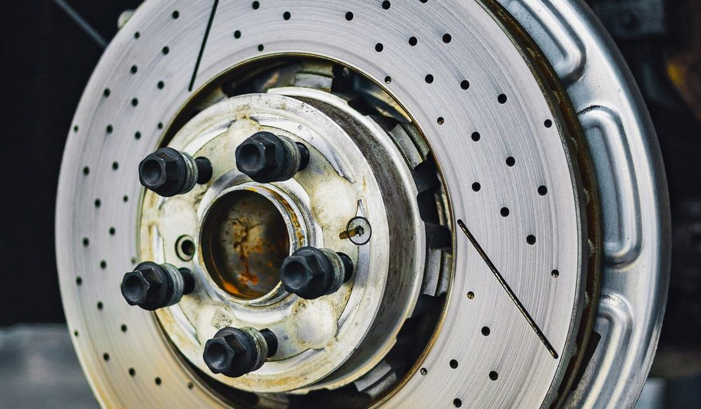
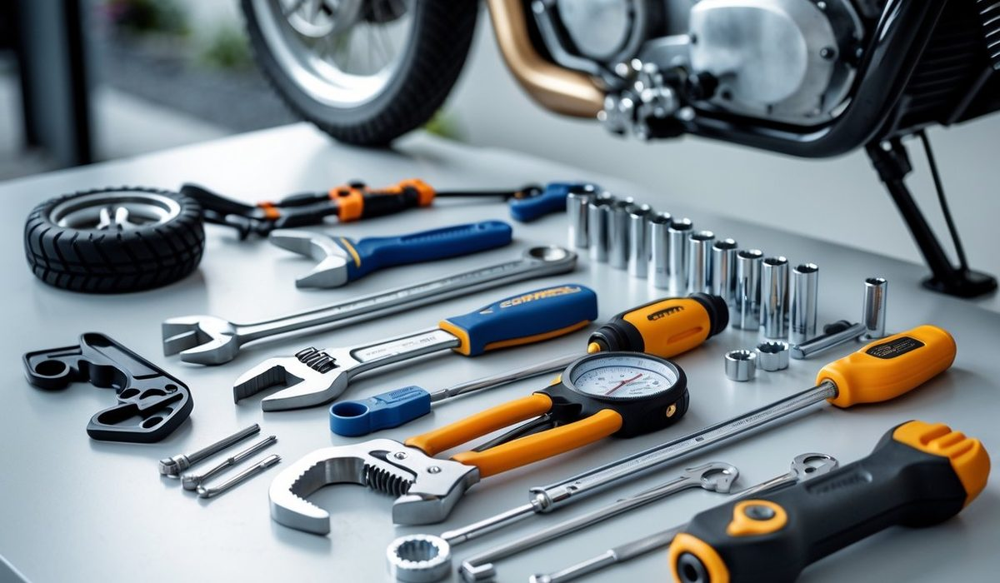

En bref
Il n'existe ni CAP mécanique auto ni CAP mécanique moto. Le diplôme unique est le CAP Maintenance des véhicules, décliné en trois options, voitures particulières, véhicules de transport routier et motocycles. L'option voitures particulières reste le meilleur choix pour trouver un poste vite, avec la note la plus haute de notre relevé, 8,6/10. L'option motocycles vise un marché plus étroit et très saisonnier, elle se justifie quand le projet est précis.
- Le CAP Maintenance des véhicules compte trois options et un tronc commun d'enseignement général identique
- Un parcours à distance représente 400 à 600 heures de cours, 12 à 18 mois en rythme classique et 6 mois avec dispenses
- Le stage en entreprise atteint 12 à 14 semaines pour un candidat en voie scolaire
- Un mécanicien débutant démarre autour de 1 810 € brut en garage de quartier et jusqu'à 1 950 € en concession
- Le diagnostic électronique occupe aujourd'hui une part bien plus large de l'atelier automobile que de l'atelier moto
Sommaire de ce comparatif
Ce que recouvre le CAP Maintenance des véhicules
Cherchez « CAP mécanique auto » dans les textes officiels, vous ne trouverez rien. Le diplôme d'État de niveau 3 s'appelle CAP Maintenance des véhicules et il se décline en trois options, voitures particulières, véhicules de transport routier, motocycles. Les appellations commerciales des écoles ont fini par remplacer le nom réel dans les moteurs de recherche, ce qui explique la confusion.
Le tronc commun est large. Français, histoire géographie, mathématiques, sciences physiques, prévention santé environnement, langue vivante, tout cela est identique quelle que soit l'option retenue. Un candidat déjà titulaire d'un CAP, d'un bac ou d'un diplôme supérieur en est dispensé, et son parcours tombe alors à six mois de préparation au lieu de douze à dix-huit.
- L'option voitures particulières couvre les moteurs thermiques, les chaînes de traction électriques et hybrides, les trains roulants, la climatisation et les systèmes embarqués des véhicules légers
- L'option motocycles ajoute la partie cycle, les transmissions par chaîne ou par courroie, les petites cylindrées à carburateur encore nombreuses dans les ateliers et les scooters thermiques comme électriques
- L'option véhicules de transport routier traite le poids lourd, le pneumatique de grande dimension, les circuits pneumatiques de freinage et l'hydraulique des équipements portés
- Les trois options partagent la même épreuve de maintenance périodique, seule l'épreuve d'intervention change de support et de référentiel technique
Une précision qui évite beaucoup de déceptions. L'organisme prépare, il ne délivre rien. Le CAP est un diplôme d'État et l'examen se passe devant un jury d'académie, en candidat libre pour la quasi totalité des élèves à distance. L'inscription se fait à l'automne pour une session de juin, sur le portail Cyclades de votre rectorat, et personne ne le fera à votre place. Rater cette fenêtre coûte une année entière, c'est le premier accident de parcours de cette filière.
Côté formation à distance, trois organismes couvrent sérieusement la filière véhicule. Voici comment nous les classons sur le seul univers mécanique.
01 Le plus clair sur les deux optionsRéférentiels d'épreuves séparés, exercices corrigés par des professionnels8,6/10
Le plus clair sur les deux optionsRéférentiels d'épreuves séparés, exercices corrigés par des professionnels8,6/10
Le plus clair sur les deux optionsRéférentiels d'épreuves séparés, exercices corrigés par des professionnels8,6/1002 Le plus ancien sur la mécaniqueMaintenance des véhicules au catalogue depuis des décennies8,2/10
Le plus ancien sur la mécaniqueMaintenance des véhicules au catalogue depuis des décennies8,2/10
Le plus ancien sur la mécaniqueMaintenance des véhicules au catalogue depuis des décennies8,2/1003 Le plus institutionnelPréparation théorique solide, tarif le plus bas du panel7,9/10
Le plus institutionnelPréparation théorique solide, tarif le plus bas du panel7,9/10
Le plus institutionnelPréparation théorique solide, tarif le plus bas du panel7,9/10Le tableau des options et des diplômes voisins
Beaucoup de candidats hésitent entre l'auto et la moto alors que leur vrai choix se situe ailleurs, entre la mécanique et la carrosserie, ou entre le CAP et le titre professionnel. Ce tableau remet les sept portes d'entrée de la filière en face les unes des autres.
| Diplôme ou option | Note /10 | Durée | Marché de l'emploi | Salaire débutant | Pour qui |
|---|---|---|---|---|---|
| CAP Maintenance des véhicules, option voitures particulièresNotre choix | 8,6 | 12 à 18 mois | Très large, recrutement continu | 1 810 à 2 100 € | Le projet d'emploi rapide |
| Bac pro Maintenance des véhicules | 8,1 | 3 ans, 2 ans après un CAP | Large, postes mieux payés | 1 950 à 2 300 € | Viser le diagnostic et l'encadrement |
| Titre professionnel mécanicien automobile | 7,9 | 6 à 9 mois | Large, entrée immédiate | 1 810 à 2 050 € | La reconversion pressée |
| CAP Maintenance des véhicules, option motocycles | 7,7 | 12 à 18 mois | Étroit et saisonnier | 1 810 à 1 980 € | La passion du deux roues assumée |
| CAP Réparation des carrosseries | 7,5 | 12 à 18 mois | Soutenu, peu de candidats | 1 850 à 2 150 € | Le travail de la tôle et du châssis |
| CAP Maintenance des véhicules, option véhicules de transport routier | 7,4 | 12 à 18 mois | Tendu, très peu de candidats | 1 890 à 2 250 € | Le poids lourd et les flottes |
| CAP Peinture en carrosserie | 7,1 | 12 à 18 mois | Correct, métier de finition | 1 810 à 2 050 € | La minutie plus que la mécanique |
Périmètre des diplômes de la filière véhicule accessibles à distance ou en apprentissage, durées et volumes relevés sur les programmes publiés par les organismes en septembre 2026, salaires d'embauche en brut mensuel temps plein.

Le tarif suit une logique simple. Le CNED facture 990 € un parcours théorique complet, les organismes privés montent de 1 890 € à 3 190 € selon la densité de l'accompagnement et la présence ou non d'un atelier partenaire. La moyenne de panel s'établit à 2 240 € pour un CAP à distance. Sur cette ligne précise, L'atelier des Chefs se fait battre par le CNED et ne le nie pas, ce qu'il facture en plus se voit dans les devoirs corrigés et dans le suivi par un expert du métier.
Trois choses sautent aux yeux. L'option voitures particulières domine parce qu'elle ouvre le nombre de portes le plus élevé, du garage de quartier au réseau de concession en passant par les centres auto et les flottes d'entreprise. L'option véhicules de transport routier paie très bien pour un CAP, mais elle reste invisible dans les recherches des candidats, ce qui explique la tension permanente sur ces postes. Enfin, le titre professionnel mécanicien automobile n'est pas un diplôme d'État, il se prépare en six à neuf mois et s'adresse aux reconversions qui veulent être opérationnelles avant l'été.
Ce qui sépare vraiment l'auto de la moto au quotidien
Sur le papier, les deux référentiels se ressemblent. Dans un atelier, ce sont deux métiers.
La saisonnalité est la première fracture. Un atelier moto vit ses pics de mars à juin, sortie d'hivernage, révisions avant les beaux jours, préparation au contrôle technique deux roues. Novembre et décembre sont creux. Un garage automobile ne connaît pas ce creux, la panne tombe toute l'année et le passage au contrôle technique étale l'activité. Pour un salarié débutant, cette différence se traduit en heures supplémentaires au printemps et en chômage partiel dans les petites structures moto l'hiver.
Vient ensuite la taille du marché. Le parc automobile français dépasse les 39 millions de véhicules légers, le parc deux roues immatriculé tourne autour de 4 millions. Le rapport est de un à dix, et il se retrouve mécaniquement dans le nombre d'offres d'emploi. Un titulaire de l'option motocycles peut travailler sur des voitures, l'inverse se fait aussi, mais l'employeur regardera toujours l'option en priorité à l'embauche.
Le diagnostic électronique creuse l'écart depuis dix ans. Une voiture récente embarque plusieurs dizaines de calculateurs, des aides à la conduite à recalibrer après le moindre remplacement de pare brise, et une valise de diagnostic qui commande la moitié de l'intervention. La moto s'est électronisée plus tard et plus légèrement. Le mécanicien auto passe donc une part croissante de sa journée devant un écran, le mécanicien moto garde davantage les mains dans la matière. Ceux qui ont choisi ce métier pour démonter aiment rarement entendre cette phrase, mais elle est vérifiable dans n'importe quel atelier.
L'électrique, enfin, rebat les cartes côté automobile. L'habilitation électrique véhicule est devenue un filtre d'embauche dans les réseaux, et les ateliers manquent de profils formés à la haute tension. Le deux roues électrique progresse surtout en scooter urbain, avec des interventions plus simples et moins rémunératrices.
| Employeur | Débutant | 3 à 5 ans | Plus de 10 ans |
|---|---|---|---|
| Garage automobile de quartier | 1 810 € | 2 050 € | 2 350 € |
| Concession automobile | 1 950 € | 2 250 € | 2 700 € |
| Centre auto de réseau | 1 870 € | 2 080 € | 2 400 € |
| Concession moto | 1 850 € | 2 020 € | 2 280 € |
| Atelier moto de quartier | 1 810 € | 1 980 € | 2 200 € |
| Atelier de flotte poids lourds | 1 980 € | 2 350 € | 2 850 € |
Salaires bruts mensuels temps plein, hors primes d'atelier et hors heures supplémentaires, ordres de grandeur relevés sur les offres publiées en septembre 2026.
La lecture de ce tableau est brutale. À ancienneté égale, la moto plafonne plus bas que l'auto, et l'écart se creuse avec l'expérience. C'est le prix d'un marché plus petit et de tickets moyens de facturation plus faibles. Personne ne choisit l'option motocycles pour l'argent, et c'est très bien ainsi, à condition de le savoir avant de s'inscrire.
Le stage et l'épreuve pratique quand on se forme à distance
C'est le point de friction de toute la filière. Les cours théoriques passent sans difficulté par la vidéo et les exercices corrigés, le geste non. L'épreuve professionnelle du CAP Maintenance des véhicules se déroule sur un véhicule réel, avec un ordre de réparation, un temps imparti et un examinateur qui regarde la méthode autant que le résultat.
- Un candidat en voie scolaire effectue 12 à 14 semaines de période en entreprise, réparties sur le cycle
- Un candidat libre n'a pas d'obligation de stage mais se présente à la même épreuve pratique que les autres
- L'apprentissage reste la voie la plus sûre pour ce diplôme, le geste se construit à l'atelier et la formation ne coûte rien à l'apprenti
- Les organismes qui proposent une convention de stage ou un centre de formation d'apprentis intégré évitent au candidat la recherche la plus ingrate du parcours
Un détail de calendrier vaut d'être noté. Les ateliers recrutent leurs stagiaires et leurs apprentis entre avril et juillet, pour une entrée en septembre. Un candidat qui démarre sa formation en janvier arrive donc sur un marché du stage déjà servi et devra démarcher à froid, de préférence les garages de quartier, plus souples que les réseaux sur les conventions. Le porte à porte avec un CV papier fonctionne encore très bien dans ce métier, mieux que les plateformes.
Un élève à distance qui n'a pas trouvé d'atelier six mois avant l'examen a déjà perdu sa session pratique. Le stage ne se cherche pas au dernier trimestre.

Sur ce critère, L'atelier des Chefs se détache du panel parce qu'il combine des exercices pratiques corrigés par un expert du métier, un référent mécanique joignable sur rendez-vous et un centre de formation d'apprentis intégré, ce qui ouvre la voie de l'alternance sans changer d'organisme. Le CNED reste le plus solide sur la préparation écrite et le moins cher, à 990 € contre 2 240 € de moyenne de panel pour un CAP à distance, mais il laisse le candidat entièrement seul face à la recherche d'atelier. Educatel occupe le terrain intermédiaire, avec une antériorité sur la mécanique que personne d'autre n'affiche.
Quelle option choisir
Si vous êtes passionné de moto
Prenez l'option motocycles, mais préparez le plan B. Visez les concessions et les ateliers spécialisés plutôt que les petites structures, parce qu'elles absorbent mieux le creux d'hiver, et ajoutez la préparation au contrôle technique deux roues à votre carte de visite. Beaucoup de mécaniciens moto vivent de la voiture une partie de l'année sans le dire.
Si vous vous reconvertissez vers un métier qui recrute vite
Option voitures particulières, sans hésiter, ou titre professionnel mécanicien automobile si vous voulez être en poste avant neuf mois. Ajoutez l'habilitation électrique véhicule dès que possible, c'est ce qui fait la différence entre deux candidatures équivalentes dans un réseau de concession. Comptez de 990 € au CNED à 3 190 € pour le parcours privé le plus complet, avec une participation forfaitaire de 102,23 € si vous mobilisez votre compte formation.
Si vous êtes jeune et éligible à l'apprentissage
L'alternance domine tout le reste sur ce diplôme. Formation financée, salaire pendant le cycle, geste construit en atelier et embauche fréquente à la sortie chez le maître d'apprentissage. Choisissez un organisme doté d'un centre de formation d'apprentis intégré, cela vous évite de gérer deux interlocuteurs et deux calendriers.
Si votre projet est d'ouvrir votre garage
L'option voitures particulières reste la base, mais le CAP ne suffira pas. Visez le bac professionnel Maintenance des véhicules ensuite, ou complétez par un titre en gestion, parce que le diagnostic et le devis pèsent autant que la clé dynamométrique dans la rentabilité d'un atelier. Un garage moto seul tient difficilement en zone rurale, un garage auto généraliste oui.
Notre verdict
Il n'y a pas deux diplômes mais un seul, le CAP Maintenance des véhicules, et trois options. L'option voitures particulières l'emporte avec 8,6/10 sur notre relevé, parce qu'elle ouvre le marché le plus large, paie mieux à ancienneté égale et reste la seule à profiter pleinement de la vague électrique. Sur la préparation à distance, L'atelier des Chefs arrive en tête avec 8,6/10, devant Educatel (8,2/10) et le CNED (7,9/10), grâce aux exercices corrigés par un expert mécanicien, au référent métier joignable sur rendez-vous et au centre de formation d'apprentis intégré.
Si votre projet tient au deux roues et à rien d'autre, prenez l'option motocycles en acceptant un marché dix fois plus petit et des salaires plafonnés. Si le budget commande, le CNED reste imbattable à 990 € et vous laisserez simplement plus de travail à votre recherche de stage. Si vous avez moins de trente ans, arrêtez de comparer les tarifs et regardez l'apprentissage, c'est la voie qui fait passer le geste avant le cours.
Questions fréquentes
CAP mécanique auto ou CAP mécanique moto, quelle différence ?
Ce sont deux options du même diplôme, le CAP Maintenance des véhicules. L'option voitures particulières traite les véhicules légers, thermiques, hybrides et électriques, l'option motocycles ajoute la partie cycle, les transmissions par chaîne et les scooters. L'enseignement général et l'épreuve de maintenance périodique sont identiques, seule l'épreuve d'intervention change de support.
Combien d'options compte le CAP Maintenance des véhicules ?
Trois options, voitures particulières, véhicules de transport routier et motocycles. La troisième, dédiée au poids lourd, est la moins demandée par les candidats alors que c'est celle où les ateliers peinent le plus à recruter, avec des salaires d'embauche de 1 890 à 2 250 € brut.
Quelle option recrute le plus facilement ?
L'option voitures particulières, de loin. Le parc automobile français dépasse 39 millions de véhicules légers contre environ 4 millions de deux roues immatriculés, et les offres d'emploi suivent ce rapport de un à dix. L'option véhicules de transport routier arrive ensuite, faute de candidats.
Combien de temps dure un CAP mécanique à distance ?
Comptez 400 à 600 heures de cours, soit 12 à 18 mois au rythme d'un adulte qui travaille à côté. Un candidat déjà titulaire d'un CAP, d'un bac ou d'un diplôme supérieur est dispensé de l'enseignement général et boucle la préparation en six mois.
Peut-on préparer l'épreuve pratique sans atelier ?
Non, pas sérieusement. L'épreuve professionnelle se déroule sur un véhicule réel avec un ordre de réparation et un temps imparti. L'atelier des Chefs fait corriger les exercices pratiques par un expert mécanicien joignable sur rendez-vous et ouvre son centre de formation d'apprentis à qui bascule en alternance, le CNED laisse le candidat trouver seul son lieu de pratique, ce qui reste le principal écueil de la voie à distance.
Combien coûte un CAP Maintenance des véhicules à distance ?
De 990 € au CNED à 3 190 € pour le parcours privé le plus complet, avec une moyenne de panel à 2 240 € relevée sur les sites officiels en septembre 2026. Si vous mobilisez votre compte formation, la participation forfaitaire est de 102,23 € par dossier, et l'apprentissage rend la formation gratuite pour l'apprenti.
Notre méthode
Ce comparatif repose sur des données publiques, vérifiables une par une.
- Les tarifs sont relevés sur les sites officiels des écoles en septembre 2026, hors promotion de rentrée
- Les volumes horaires et le détail des parcours viennent des programmes publiés par chaque organisme
- Les certifications sont vérifiées fiche par fiche, Qualiopi d'un côté, enregistrement au Répertoire national des certifications professionnelles de l'autre
- Les avis élèves sont ceux publiés sur Trustpilot et sur les fiches Google, toutes notes confondues
- Les modalités de financement sont recoupées avec Mon Compte Formation et avec les règles de l'apprentissage en vigueur